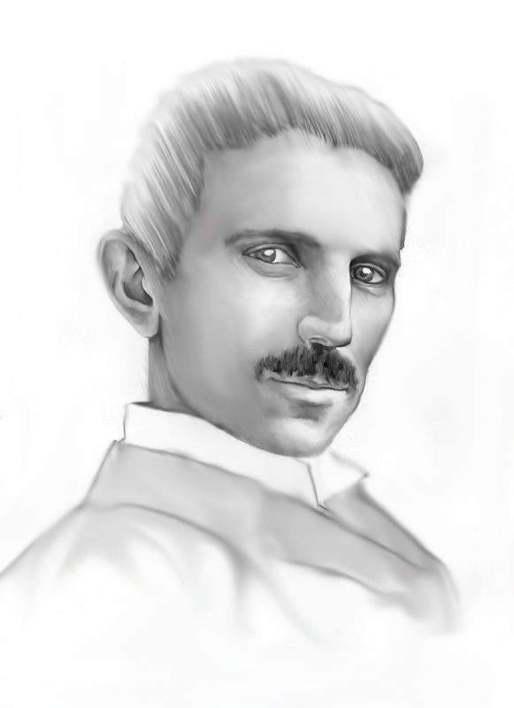

Tesla's legacy has endured in books, films, radio, TV, music, live theater, comics and video games. The impact of the technologies invented or envisioned by Tesla is a recurring theme in several types of science fiction.
On Tesla's 75th birthday, in 1931, Time magazine put him on its cover. The cover caption "All the world's his power house" noted his contribution to electrical power generation. He received congratulatory letters from more than 70 pioneers in science and engineering, including Albert Einstein
Awards
Enterprises and organizations
See more at Wikipedia